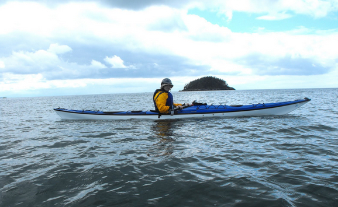
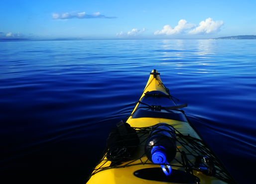
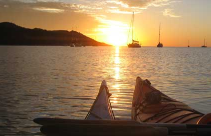

Discover Magnetic Island’s World Heritage National and Marine Parks from the quiet of your kayak.



Morning Tour:
Sunset Tour:
Kayak rentals also available from $60 per day.

Kayak rentals also available from $60 per day.


20% OFF with QUT student card

10% OFF with GU student card

5% OFF with any types of GoCard

15%-20% OFF with Treasury membership Card

10% OFF with Flybuy Card

10% OFF with membership card